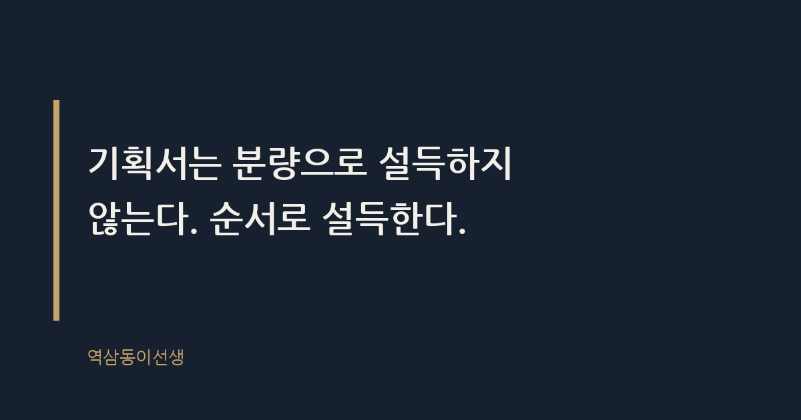
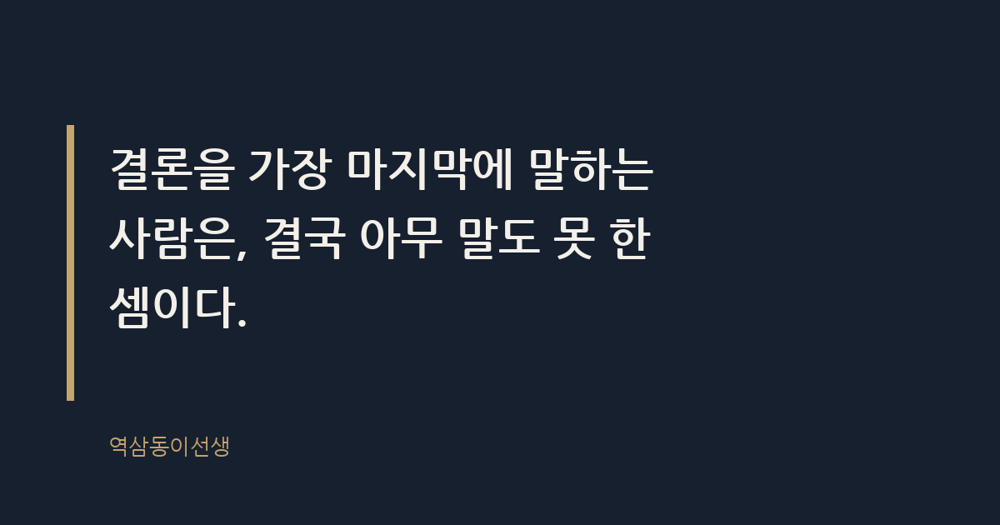

주제 기획서 한 장으로 설득하는 구조 (evergreen / office)
제목 후보
메타 설명 기획서 한 장으로 설득하는 구조를 25년 차 마케터가 현장 경험으로 풀었다. 결론-근거-실행 순서와 원페이지 템플릿까지 본문에서 바로 쓸 수 있다.
라벨 기획서작성법, 원페이지기획서, 보고서잘쓰는법, 직장인글쓰기, 비즈니스글쓰기, 피라미드구조, 기획서한장으로설득하기, 기획서템플릿, 임원보고서작성법, 두괄식보고서, 미노피라미드원칙
실용 자산 양식 템플릿 — 검색 의도가 '양식·구조'를 찾는 도구형이라 바로 채워 쓸 수 있는 원페이지 템플릿을 본문에 제공한다
발행 전 팩트체크
이미지 (Blogger 편집기에 드래그해 넣으세요)
도입부 사진 · ⓒ Jo_Johnston / Pexels


작년 가을, 마케팅본부 회의실. 후배 하나가 열두 장짜리 기획서를 들고 들어왔다. 신규 캠페인 제안서였는데, 표지 넘기고 목차 넘기고 시장 배경 설명만 세 장이었다. 상무님이 세 번째 장에서 손을 멈추더니 물었다. "그래서 결론이 뭐야?" 후배는 당황해서 뒤로 넘기기 시작했고, 열 장을 넘기는 동안 회의실 공기가 눈에 띄게 식었다. 결국 그 기획서는 통과되지 못했다. 내용이 나빠서가 아니었다. 순서가 틀렸던 거다.
기획서 한 장으로 설득하는 구조란, 결론을 가장 먼저 배치하고 그 아래 근거와 실행안을 피라미드식으로 쌓아 올리는 문서 형식이다. 분량을 줄이는 기술이 아니라 순서를 바꾸는 기술이다. 많은 직장인이 "한 장으로 줄이라"는 말을 들으면 글자 크기를 줄이고 여백을 좁힌다. 그건 압축이지 설득이 아니다.
내가 25년 동안 결재 라인에 앉아보고, 또 결재를 올려보면서 깨달은 건 하나다. 임원은 기획서를 '읽지' 않는다. '스캔'한다. 첫 세 줄 안에 결론이 없으면, 나머지 아홉 장은 존재하지 않는 것과 같다. 후배가 들고 온 열두 장짜리 기획서의 문제는 내용의 부실함이 아니라, 결론이 열한 번째 장에 숨어 있었다는 점이었다.
두괄식이라는 말은 누구나 안다. 문제는 실제로 쓸 때 몸이 거꾸로 움직인다는 거다. 배경부터 설명하고 싶은 충동, 고생한 과정을 보여주고 싶은 욕심이 앞선다. 하지만 결재자 입장에서는 그 순서가 정확히 반대다. 결론 → 근거 → 실행안. 이 세 단계만 기억하면 된다.
맥킨지 컨설턴트 출신 바바라 민토가 정리한 '피라미드 원칙'이 바로 이 구조다. 핵심 메시지를 최상단에 두고, 그 아래 이를 뒷받침하는 근거 서너 개를 배치하고, 각 근거를 다시 세부 데이터로 받치는 방식이다. 1990년대 중반 책으로 정리된 이 원칙은 지금도 글로벌 컨설팅펌 보고서의 기본 골격으로 쓰이는 것으로 알려져 있다. 한 장짜리 기획서는 결국 이 피라미드를 압축해서 한 화면에 욱여넣는 작업이다.
제프 베조스가 아마존에서 파워포인트 슬라이드를 금지하고 6페이지짜리 내러티브 메모를 도입한 일화는 유명하다. 회의 시작 전 30분 동안 참석자 전원이 메모를 조용히 읽고, 그 다음에야 토론을 시작하게 했다는 방식으로 알려졌다. 슬라이드의 불릿 포인트는 생각의 빈틈을 가려주지만, 완결된 문장으로 쓰인 메모는 허점을 숨길 곳이 없다. 이게 핵심이다. 한 장짜리 기획서가 무서운 이유는, 거기엔 숨을 자리가 없기 때문이다.
심리학자 조지 밀러가 발표한 '매직넘버 7' 개념을 빌리자면, 사람이 한 번에 처리할 수 있는 정보 단위는 생각보다 적다. 임원 회의실에서 결재자는 한 안건에 평균 몇 분을 쓸까. 짧으면 2~3분이다. 그 짧은 시간에 처리 가능한 정보량은 핵심 메시지 하나, 근거 서너 개, 실행안 하나 정도가 한계다. 열두 장짜리 기획서를 다 읽고 판단할 시간은 애초에 주어지지 않는다.
왜 한 장이 열 장보다 더 잘 통하는가. 이유는 간단하다. 결재자의 인지 부하를 줄여주기 때문이다. 장수가 늘어날수록 읽는 사람은 '어디까지가 핵심이고 어디부터가 참고 자료인가'를 스스로 판단해야 한다. 그 판단 비용을 결재자에게 떠넘기는 순간, 보고서는 이미 설득에서 멀어진다. 한 장짜리 구조는 그 판단을 기획자가 대신 끝내놓은 문서다. "읽어보고 판단해주세요"가 아니라 "이렇게 판단하시면 됩니다"를 보여주는 거다.
내가 본 것 중 가장 인상적인 한 장은, 숫자 하나로 시작한 기획서였다. "재방문율 10%p 하락, 원인은 세 가지"라는 문장 하나로 첫 줄을 연 후배가 있었다. 나머지는 그 숫자를 설명하는 근거였다. 결재는 그 자리에서 났다. 복잡한 배경 설명이 전혀 필요하지 않았다. 숫자 하나가 열 줄의 서사보다 강했다.
결론부터 쓰는 게 어렵다면 방법을 바꾸면 된다. 나는 후배들에게 늘 '거꾸로 쓰기'를 권한다. 배경부터 쓰지 말고, 맨 마지막에 하고 싶은 말부터 한 줄 적어놓고 시작하는 거다. 그 한 줄을 써놓은 다음, 그 문장을 증명하기 위해 필요한 근거만 역으로 채워 넣는다. 이렇게 쓰면 군더더기가 자연스럽게 빠진다. 배경 설명이 길어지는 이유는 결론을 아직 못 정했기 때문인 경우가 많다. 결론이 흐릿하니 주변 이야기로 분량을 채우는 거다. 반대로 결론이 선명하면 근거는 저절로 짧아진다. 증명해야 할 과녁이 분명하니, 과녁과 상관없는 화살을 쏠 이유가 없어진다.
몇 년 전 사내 기획 워크숍에서 '엘리베이터 피치' 훈련을 한 적이 있다. 30초 안에 기획안을 설명하고 끝내는 훈련이었는데, 처음엔 다들 배경 설명으로 20초를 써버리고 결론은 마지막 5초에 욱여넣었다. 세 번째 시도쯤 되니 다들 첫 문장에 결론을 넣기 시작했다. 30초라는 제약이 몸에 밴 습관을 깬 거다. 한 장짜리 기획서도 똑같다. 분량의 제약이 생각의 순서를 바꾼다.
신입 시절엔 나도 배경 설명에 공을 들였다. 시장 상황, 경쟁사 동향, 소비자 트렌드를 두 장씩 깔아야 성의 있어 보인다고 믿었다. 그런데 막상 임원 자리에 앉아 결재를 받아보니 생각이 완전히 바뀌었다. 하루에 결재해야 할 안건이 열 개가 넘는 날, 배경 설명부터 읽을 여유는 없었다. 결론이 안 보이면 다음 안건으로 넘어가 버리는 경우도 있었다. 냉정하게 들리겠지만 이게 현실이다. 결재자의 시간은 유한하고, 그 유한한 시간 안에서 내 기획서가 선택받으려면 가장 먼저 눈에 띄어야 한다. 배경 설명은 결론이 받아들여진 다음에 물어봐도 늦지 않는다.
그래서 요즘 후배들 기획서를 봐줄 때 제일 먼저 하는 질문이 있다. "이 장을 다 가리고 첫 줄만 보여줘도 내가 뭘 해야 하는지 알겠어?" 이 질문에 바로 답이 나오지 않으면, 아무리 분석이 정교해도 그 기획서는 다시 써야 한다.
아래는 현장에서 실제로 써온 구조다. 항목 순서를 그대로 따라가면서 자기 상황에 맞는 문장으로 채우면 된다.
| 구조 항목 | 작성 예시 |
|---|---|
| 한 줄 결론 (Headline) | 이번 캠페인으로 3개월 내 앱 재방문율 15%p 끌어올린다 |
| 배경 (Why Now) | 지난 분기 재방문율이 경쟁사 대비 10%p 낮아짐 |
| 핵심 근거 3가지 (Because) | ① 리타겟팅 광고 효율 저하 ② 앱 푸시 피로도 증가 ③ 경쟁사 신규 기능 출시 |
| 실행안 (What) | 주간 콘텐츠 리프레시 + 개인화 푸시 전환 |
| 필요 자원 (Ask) | 예산 3천만원, 담당 2명, 실행 기간 4주 |
| 예상 리스크 | 초기 2주 전환율 변동성, 모니터링으로 대응 |
이 여섯 칸을 한 페이지 안에 다 채우면, 보고서는 자연스럽게 결론-근거-실행 순서를 갖춘다. 중요한 건 칸의 순서를 절대 바꾸지 않는 것이다. 배경을 결론 앞에 놓는 순간, 다시 열두 장짜리 기획서로 돌아가는 길이 열린다.
구조를 알아도 현장에서 삐끗하는 지점이 있다. 세 가지만 기억하면 된다. 첫째, 한 줄 결론은 반드시 동사로 끝낸다. "~에 대한 검토"가 아니라 "~한다"로 맺어야 결재자가 무엇을 승인하는지 명확해진다. 둘째, 숫자는 하나라도 넣는다. 추상적인 형용사보다 구체적인 숫자 하나가 열 배는 더 신뢰를 준다. 셋째, 질문으로 시작하지 않는다. "재방문율을 어떻게 올릴까?"로 시작하는 기획서는 결재자에게 숙제를 떠넘기는 셈이다. 답을 가지고 들어가는 게 기획서지, 질문을 던지는 게 기획서가 아니다.
그리고 하나 더. 임원은 화면보다 종이를 더 신뢰하는 경향이 있다. 노트북 화면으로 스크롤하며 보는 보고서와, 손에 쥐고 밑줄 긋는 보고서는 결재 속도가 다르다. 한 장짜리 기획서는 이 지점에서도 유리하다. 종이 한 장은 들고 다니며 다시 읽을 수 있지만, PDF 열두 장은 다시 열어보지 않는다.
열두 장을 한 장으로 줄이는 건 야박한 일이 아니다. 오히려 상대방의 시간을 존중하는 일이다. 다만 씁쓸한 건, 정작 공들여 쓴 사람일수록 이걸 받아들이기 어렵다는 점이다. 밤새 만든 열두 장짜리 자료를 한 장으로 줄이라고 하면, 노력을 부정당한 기분이 든다. 하지만 결재자의 책상 위에서 승부가 나는 건 노력의 총량이 아니라 구조의 완성도다. 기획서는 분량으로 설득하지 않는다. 순서로 설득한다. 결론을 가장 마지막에 말하는 사람은, 결국 아무 말도 못 한 셈이다.
Q. 한 장짜리 기획서로 단번에 결재받아본 적, 있으신가요?